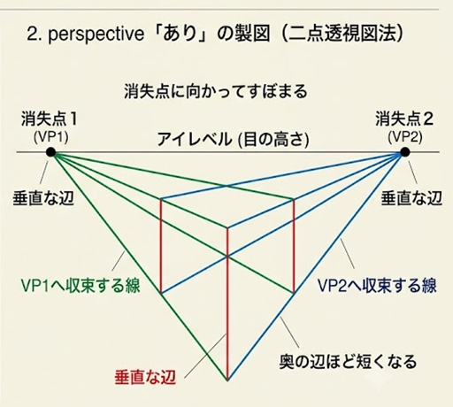
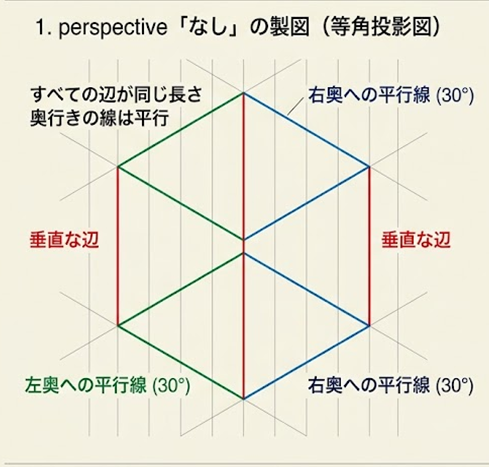
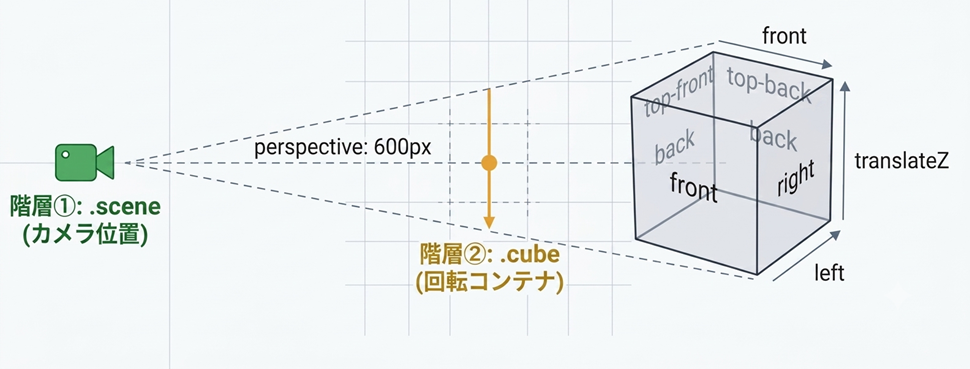

奥行き方向の平行線を「消失点へと収束する線」に変え、四角錐の視界を作ることで、手前を大きく・奥を小さく映す遠近感を生み出します。
初期値 flat による「Z軸のデータ没収（平面潰し）」を解除し、子要素が持つ独自の立体空間ルールを親の3D空間へそのまま同期・結合させます。


perspectiveを設定することで位置が発生になる
perspective を指定すると、上の製図のように平行線から消失点に収束する線に変換されます
それによって物体から消失点までの距離とカメラ位置によって物体の見え方がかわります。
要素に transform を指定すると、上の製図のように自身を起点とした独自の「3D補助線（ローカル座標空間）」が展開されます。
親要素は、この補助線のルールを子要素にも強制的に適用することで、自分自身の回転や移動に子要素を美しく連動させています。
しかし、子要素に引き継がれる補助線の初期設定（transform-style: flat）では、Z軸（奥行き）のルールが強制的に「0（平面）」にリセットされてしまいます。これが、子要素が立体的に動いても親の面で押し潰されてしまう原因です。
視線の進むカタチが「直線」から「放射状」に狭まることで、初めて奥のものが小さく映るようになります（遠近感の誕生）。
1. 親要素の transform：絶対的な座標空間の生成
要素に transform を指定した瞬間、その要素は自身を起点とする「独自の座標空間（補助線）」を生成します。同時に、内側の子要素たちに対して強力な強制力（支配権）を持ちます。
2. デフォルト（flat）：Z軸の没収と2D平面への強制
子要素に強制する補助線の初期値は flat（2D空間）です。
・X 軸・Y 軸： 親の補助線と同期するため、位置や2D的な回転は連動します。
・Z 軸（強制リセット）： 親のルールに「奥行き（Z）」が存在しないため、子要素がローカル軸でどれだけ立体的に動いても、親の境界線をまたぐ瞬間に Z 軸のデータが 0
へと強制修正（押し潰し） されます。これが立体構造の崩壊原因です。
3. preserve-3d：3D補助線の完全な解放とドッキング
値を preserve-3d に変更することで、親要素は「Z
軸も含めたすべての3D補助線」をセットにして子要素に引き継ぐようになります。これにより立体情報が破壊されることなく、ひとつの塊として美しく連動できるようになります。

<div class="scene">
<div class="cube">
<div class="face front" style="--yDeg:0">front</div>
<div class="face back" style="--yDeg:90">back</div>
<div class="face right" style="--yDeg:180">right</div>
<div class="face left" style="--yDeg:270">left</div>
</div>
</div>
<style>
.scene {
perspective: 600px;
}
.cube {
transform: rotateY(--var(turn));
transform-style: preserve-3d;
}
.front,.back,.right,.left {
transform: rotateY(calc(var(--yDeg)*1deg) translateZ(50px));
}
</style>ルート要素に perspective を指定することで、3D空間を見つめる「カメラ位置」を固定します。この数値が小さいほど広角レンズのように強く歪み、大きいほど望遠レンズのように平行に近づきます。
中間のコンテナ要素に transform を指定します。こうすることで、子を共通したtransformの補助線で連動させることができます。
子要素のZ軸方向に適用する補助線は0のため、立体構造を保持するには preserve-3dが 必須になります
ルートから中間コンテナまでの
引き継がれたパース空間のルールの中で、それぞれのパネルが translateZ や rotate を使って実際に手前や奥へと飛び出すように配置されます。
共通のカメラから見た距離に応じて、自動的に大きさが歪み、立体に見えるようになります。